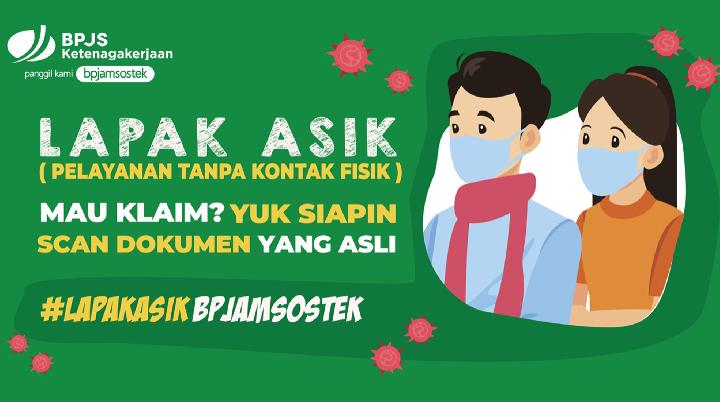

Top Banget! Jokowi Tambah Manfaat BP Jamsostek

Jakarta, CNBC Indonesia- Kabar Gembira bagi seluruh pekerja Indonesia.
Pemerintah akan menambahkan manfaat dalam program Jaminan Kecelakaan Kerja (JKK) dan Jaminan Kematian
BPJS Ketenagakerjaan yang kini berganti nama jadi BP Jamsostek.
Penambahan manfaat tersebut merupakan perubahan setelah Presiden Joko Widodo
menandatangani Peraturan Pemerintah Nomor 82 Tahun 2019 tentang perubahan atas PP 44 Tahun 2015,
tentang Penyelenggaraan Program Jaminan Kecelakaan Kerja dan Jaminan Kematian.
Bahkan dalam perluasan manfaat JKK, pekerja yang mengalami kecelakaan akan ditanggung sampai sembuh berapa pun biayanya untuk kebutuhan medis. Penambahan manfaat JKK pada perubahan PP 44 Tahun 2015 salah satunya perawatan di rumah alias homecare.
Bahkan dalam perluasan manfaat JKK, pekerja yang mengalami kecelakaan akan ditanggung sampai sembuh berapa pun biayanya untuk kebutuhan medis. Penambahan manfaat JKK pada perubahan PP 44 Tahun 2015 salah satunya perawatan di rumah alias homecare.
Lapak Asik BPJAMSOSTEK Direspon Positif Peserta, Begini Cara Ajukan Klaim JHT

INFO BISNIS — BPJAMSOSTEK menyatakan siap memberikan pelayanan terbaik meski di tengah kondisi pandemi Covid-19 ini.
Bahkan banyak pihak memprediksi akan terjadi gelombang klaim JHT (jaminan hari tua) dalam jumlah tinggi imbas dari
tingginya angka PHK dan kebutuhan ekonomi yang mendesak.
Direktur Pelayanan BPJAMSOSTEK, Krishna Syarif, mengatakan bahwa pihaknya telah mempersiapkan infrastruktur pelayanan untuk dapat mengakomodir pengajuan klaim JHT di tengah kondisi pandemi. Lapak Asik merupakan singkatan dari Layanan Tanpa Kontak Fisik yang diaktifkan sebagai pedoman protokol layanan klaim JHT di kala kondisi pandemi Covid-19. Melalui protokol Lapak Asik, peserta tidak perlu datang ke kantor cabang, cukup mendaftar via online. Hal ini selain mempermudah peserta, juga berdampak positif pada pemutusan rantai penyebaran virus.
Direktur Pelayanan BPJAMSOSTEK, Krishna Syarif, mengatakan bahwa pihaknya telah mempersiapkan infrastruktur pelayanan untuk dapat mengakomodir pengajuan klaim JHT di tengah kondisi pandemi. Lapak Asik merupakan singkatan dari Layanan Tanpa Kontak Fisik yang diaktifkan sebagai pedoman protokol layanan klaim JHT di kala kondisi pandemi Covid-19. Melalui protokol Lapak Asik, peserta tidak perlu datang ke kantor cabang, cukup mendaftar via online. Hal ini selain mempermudah peserta, juga berdampak positif pada pemutusan rantai penyebaran virus.